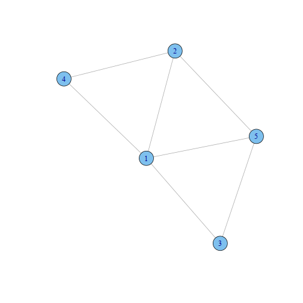

Sparse inverse covariance estimation with the graphical lasso
Friedman, Jerome, Hastie, Trevor, Tibshirani, Robert
Keith Hughitt
Graphical Models
Graphical models provide a way to represent the conditional dependencies between a number of random variables. They provide a visual way of representing the joint distribution of the entire set of RVs.
Components:
- Vertices: random variables
- Edges: condition dependencies between RVs
Types:
- Directed:
Bayesian networks(causal relationships) - Undirected:
Markov random fields/Markov networks
See The Elements of Statistical Learning (ESM) chapter 17 for an overview of undirected graphical models.
Graphical Models
Constructing graphical models from data:
- Model selection: choosing the structure of the graph.
- Learning: Estimating edge weights from data.

Undirected Graphical Models
Gaussian Graphical Models
Assume that the observations have a multivariate Gaussian distribution with mean \(\mu\) and covariance matrix \(\Sigma\).
The inverse covariance matrix \(\Theta = \Sigma^{-1}\) (aka concentration matrix or precision matrix) contains information about the partial covariances between each pair of nodes conditioned on all other variables (ESL.)
If the $ij$th component of \(\Theta\) is zero, then variables \(i\) and \(j\) are conditionally independent, given the other variables.
Covariance graphs
- In covariance graphs or relevance networks, edges are present when the covariance is non-zero.
Sparse Graphical Models
- In some cases, you expect that the underlying data should be sparse.
- Want to only keep significant edges.
- An \(L_1\) penalty on the estimation of \(\Sigma^{-1}\) can be used to induce sparseness.
Using the Lasso for Sparse Graphical Models
Meinshausen and Bühlmann (2006)
- Which components of \(\Sigma^{-1}\) are non-zero?
- Fit a lasso regression for each variable using all other variables as predictors.
- Considered nonzero if \(\Sigma^{-1}_{ij} \neq 0\) AND/OR \(\Sigma^{-1}_{ji} \neq 0\)
- Shown asymptotically to find nonzero components
Exact solutions
Other authors have suggested exact solutions:
- Yuan & Lin (2007)
- Banerjee et al. (2007)
- Dahl et al. (2007)
Interior point optimization is used to determine an exact maximiation.
Graphical Lasso
- Exact solution based on coordinate descent approach in Banerjee et al. (2007)
Approach
- \(N\) observations, \(x_i, i=1,\ldots,N\) with dimension \(p\), mean \(\mu\) and covariance \(\Sigma\)
- let \(\Theta = \Sigma^{-1}\) and let \(S\) be the empirical covariance matrix: \[S = \frac{1}{N} \sum_{i=1}^N (x_i - \overline{x})(x_i - \overline{x})^T\]
- Goal: Maximize the log-likelihood \[\text{log det} \Theta - \text{tr}(S\Theta) - \rho\Vert \Theta \Vert_1\] over non-negative definite matrices \(\Theta\).
- Above expression is the "Gaussian log-likelihood of the data, partially maximized with respect to the mean parameter \(\mu\).
An interesting methods discussion...
Algorithm (Friedman et al. 2007):
- Start with \(W = S + \rho I\). The diagonal of \(W\) remains unchanged in what follows.
- For each \(j = 1,2,\ldots p,1,2,\ldots p,\ldots,\) solve the lasso problem: \[ min_\beta \{ \frac{1}{2} \Vert W^{1/2}_{11} \beta - b\Vert^2 + \rho \Vert \beta \Vert_1 \}\] where \(b = W^{-1/2}_{11} s_{12}\), which takes as input the inner products \(W_{11}\) and \(s_{12}\). This gives a \(p -1\) vector solution \(\hat{\beta}\). Fill in the corresponding row and column \(W\) using \(w_{12} = W_{11} \hat{\beta}\).
- Continue to convergence.
In glasso, the procedure stops when the average absolute change in \(W\) is
less than \(t \cdot \text{ave} |S^{-\text{diag}}|\) where \(S^{-\text{diag}}\) are
the off-diagonal elements of the empirical coveriance matrix \(S\) and \(t\) is
a fixed threshold, set by default at 0.001.
An interesting algorithm discussion...
Performance
- Simulated data for sparse and dense scenarios:
Sparse
- \((\Sigma^{-1})_{ii} = 1\),
- \((\Sigma^{-1})_{i,i-1} = (\Sigma^{-1})_{i-1,i} = 0.5\)
- 0 otherwise -. Dense
- \((\Sigma^{-1})_{ii} = 2\),
- \((\Sigma^{-1})_{ii'} = 1\) otherwise
Compared performance to
COVSELmethod from Banerjee et al. (2007).Result: Graphical lasso is 30-4000 times faster than COVSEL and 2-10 slower than the approximate method.
Even for dense problems, finishes in ~1min for p=1000 features. (Hard to tell from graph how it will scale to many more features, however).
Performance

System info
sessionInfo()
## R version 3.0.2 (2013-09-25)
## Platform: x86_64-unknown-linux-gnu (64-bit)
##
## locale:
## [1] LC_CTYPE=en_US.UTF-8 LC_NUMERIC=C
## [3] LC_TIME=en_US.UTF-8 LC_COLLATE=en_US.UTF-8
## [5] LC_MONETARY=en_US.UTF-8 LC_MESSAGES=en_US.UTF-8
## [7] LC_PAPER=en_US.UTF-8 LC_NAME=C
## [9] LC_ADDRESS=C LC_TELEPHONE=C
## [11] LC_MEASUREMENT=en_US.UTF-8 LC_IDENTIFICATION=C
##
## attached base packages:
## [1] stats graphics grDevices utils datasets methods base
##
## other attached packages:
## [1] igraph_0.6.5-2 slidify_0.3.3 colorout_1.0-0 vimcom_0.9-9
## [5] setwidth_1.0-3
##
## loaded via a namespace (and not attached):
## [1] evaluate_0.5.1 formatR_0.9 knitr_1.5 markdown_0.6.3
## [5] stringr_0.6.2 tools_3.0.2 whisker_0.3-2 yaml_2.1.8